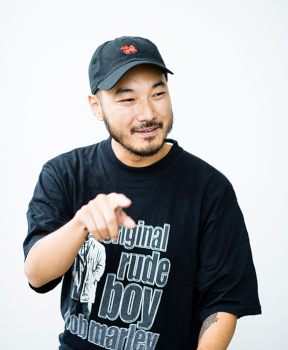

メインメンバー
RED RICE
| 本名 | 森﨑 匠（もりさき たくみ） | |
| 出身地 | 神奈川県藤沢市 | |
| 誕生日 | 1976年1月9日 | |
| 血液型 | A |
湘南乃風のリーダーで、タフな低音が身体と心を揺さぶるワイルド・スタイラ、RED RICE。
かつてオールドスクール・テイストの名残を止める地元エリアにおいて 当時から〈最先端のオケに王道のラガ声で的確に韻を踏んでいく〉旬なジャパニーズ・スタイルを体現していた彼は、4人の中でいち早く頭角を現した。 彼の先見性と突破力がHAN-KUNとの出会いを生み、その後の湘南乃風結成の契機になったのは紛れもない風史のひと幕。
もちろん、出自を134ストリートに置く彼はエリア独特のノリ重視の楽曲も得意としており、シリアスとユーモアを往き来する独自スタンスはクルーに色濃く投影、人生の機微を歌う湘南乃風の多様性を担っている。
また2011年秋、念願の俳優業を宮藤官九郎脚本によるドラマ『11人もいる』でスタート、存在感ある彼の演技がいかに世に浸透していくのか？ 期待は高まるばかりである。
お母さんと赤飯が大好き。
若旦那
| 本名 | 新羅 慎二（にら しんじ） | |
| 出身地 | 東京都世田谷区 | |
| 誕生日 | 年4月6日 | |
| 血液型 | A |
青春時代の大半をルックスと違わぬハードコア・ウェイでサバイブしてきた、若旦那。
湘南生まれレゲエ育ちの3人の風が若旦那という異風（威風）に出会ったことが、今日まで続く最強ストリート・オペラ『風伝説』の起源と言っても過言ではない。 彼自身、生来のプロデューサー気質を134クルーで開花、初期から中期まで多くの名曲誕生の原動力となってきた。〈歌心は、人間、生〉。 その特性は、音楽以外の活動でも大きな力を発揮。
ムコ多糖症という難病と深く関わり合った2007年の『てるてるいのち』、ジャマイカの隣国ハイチ大地震を受けた2010年の『LOVE FOR HAITI』、そして2011年、東北大震災直後には『LOVE FOR NIPPON』として行動を開始。
自らの人間力を源にした一貫した活動は当然歌にも反映、当初のダミ声から胸に染みるシンガー・スタイルまで幅を広げている。
現在（2019年）は新羅慎二としてソロ活動に力を入れている。
SHOCK EYE
| 本名 | 植村 家浩（うえむら いえひろ） | |
| 出身地 | 神奈川県鎌倉市 | |
| 誕生日 | 1976年12月14日 | |
| 血液型 | A |
スムースSing Jay（レゲエ特有のラップとシングの融合）スタイルとも呼ぶべき独特の語り口を魅せつけるSHOCK EYE。
堅いライミング、高速MCといった刻むハイ・スキルは、HIP HOP DJからレゲエ・サウンドに所属した後、Dee Jayへと転向していった音楽家としてのキャリアをトータライズしていったことに由来する。また、常に内なる葛藤と向き合うことでコンプレックスをポジティヴなエネルギーに転化、強力な武器に変えてきた経緯は自身も承知。故に、〈溢れるその熱情は彼を語る上でハズせない特徴のひとつ〉だ。
近年はトラック制作チームAmin03としても良質なサウンドを提示、音楽への強い探究心と幅広いジャンルへの造詣に突き動かされるように2011年にはポルノグラフィティの新藤晴一とサウンド・クリエイターの篤志とともにTHE野党を旗揚げ。今後の動勢にも注目が集まる。
HAN-KUN
| 本名 | 半澤 卓朗（はんざわ たくろう） | |
| 出身地 | 神奈川県鎌倉市深沢 | |
| 誕生日 | 1979年1月2日 | |
| 血液型 | B |
現在も（もちろん！）継続中のレゲエの約束の地・ジャマイカと日本のタイムラグのない往復、客演として数多のコンピ・アルバムや他アーティストの作品に継続的に参加、さらに単独クレジットによる野外フェスからクラブまで昼夜を問わぬ圧倒的な本数のステージを経て、ソロ・アクトとしても不動の地位を築き上げるHAN-KUN。
彼は〈ハードコアなかけ合いもできてサビも歌える自分だけのスタイル〉を極めようとメッセージする歌い手であり、そこから冠された異名はVOICE MAGICIAN（ヴォイス・マジシャン）。
いちDee Jayとしての意識は高く、またRUB-A-DUB（ラバダブ）と呼ばれるダンスホール流儀のフリースタイルを得意としていることも現場を知る人なら周知の事実である。その名が表す通り、高音域を駆使した特徴的なマジック・ヴォイスで湘南乃楽曲にミラクルとケミストリーを起こす。
サポートメンバー
The BK Sound
|  | 本名 | 不明 |
| 出身地 | 不明 | |
| 誕生日 | 1980年9月19日 | |
| 血液型 | A |
1998年よりアーティスト活動をスタート。その後、134Recordingsへ所属し湘南乃風のBack Selecter（DJ）としての活動を新たにスタートさせると同時にソロアーティストとしての活動の場も広げる。
近年は国内のビッグフェスからクラブイベントまで日本全国駆け巡っている。更には、海外のイベントにも招集され、国外へも活動の幅を広げる。
スタジオワークとして、湘南乃風のリミックス制作や自身のMix CD制作をこなし、ついに2010年、The BK Sounds としてFor Life Music Entertainmentよりソロメジャーデビュー。1stALBUM「One」をリリース。そして2011年7月、一年足らずで2ndALBUM「Two」をリリース。2012年よりレーベルをToysfactoryに移籍。上江洌.清作 & The BK Sounds!!名義でジャマイカ録音のアルバム「アイランド」をリリース。
自身の楽曲やダブプレートを武器にオーディエンスを一つにまとめあげる現場感とバイブスで現場をロックするセレクター。